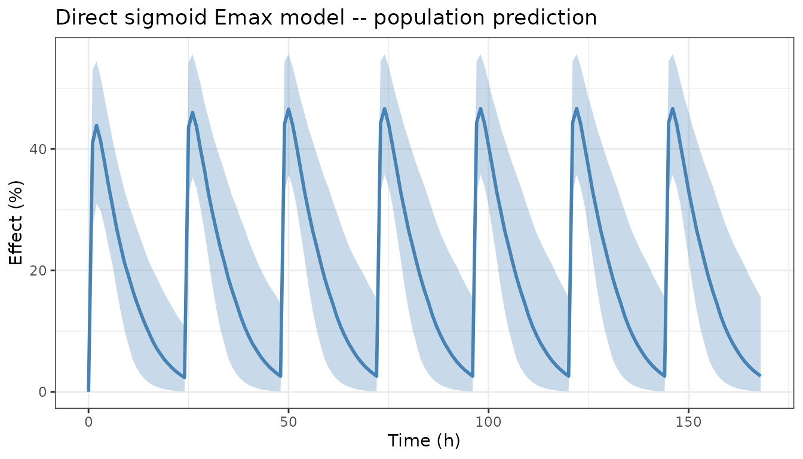
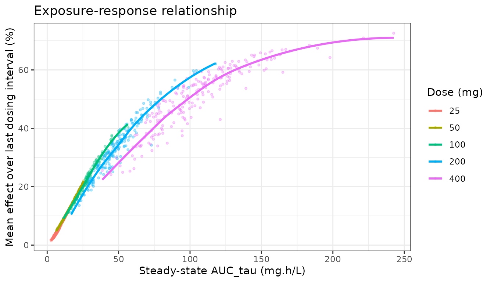
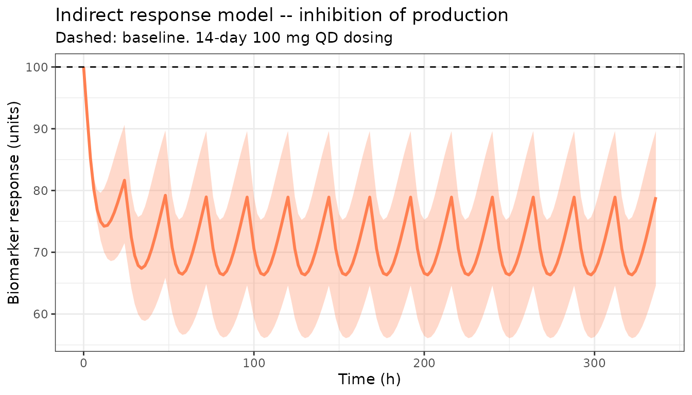
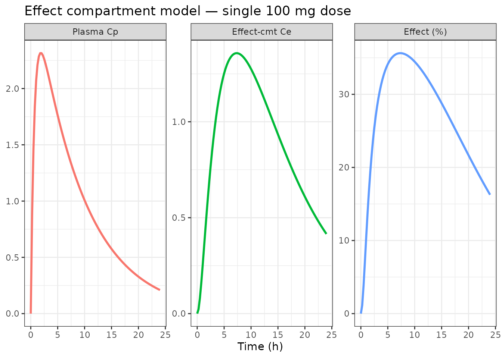
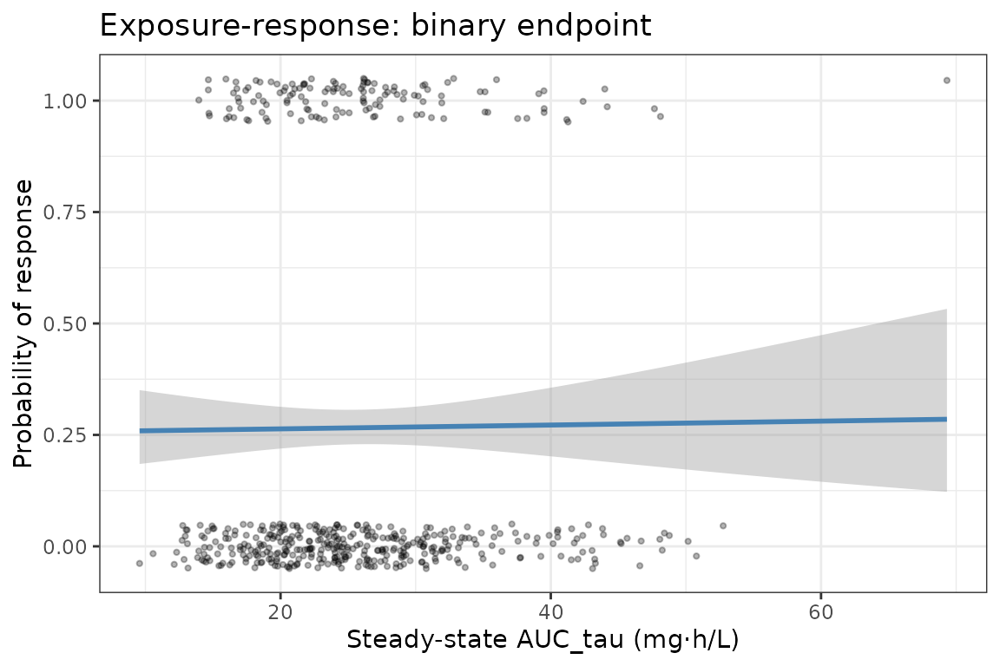

Exposure-Response Simulation with rxode2
Source:vignettes/articles/rxode2-exposure-response.Rmd
rxode2-exposure-response.Rmd
library(rxode2)
#> rxode2 5.0.2 using 2 threads (see ?getRxThreads)
#> no cache: create with `rxCreateCache()`
library(ggplot2)
library(data.table)Overview
Exposure-response (E-R) simulation links a pharmacokinetic (PK) model to a pharmacodynamic (PD) model to predict how changes in drug exposure translate to clinical or biomarker outcomes. Common PD model types supported in rxode2 include:
- Direct effect (Emax, sigmoid Emax, linear)
- Indirect response (stimulation/inhibition of input/output)
- Turnover / tolerance
- Effect compartment (biophase link)
- Categorical / binary (using simulation distributions)
- Time-to-event (hazard models)
Direct Emax model
The simplest link model connects the PK model’s central compartment concentration directly to an Emax expression.
emaxMod <- function() {
ini({
tka <- log(1.5)
tcl <- log(4.0)
tv <- log(35)
emax <- 80 # maximum effect (%)
ec50 <- 2.0 # EC50 (mg/L)
hill <- 1.5 # Hill coefficient
eta.cl ~ 0.09
eta.v ~ 0.09
add.sd <- 2
})
model({
ka <- exp(tka)
cl <- exp(tcl + eta.cl)
v <- exp(tv + eta.v)
d/dt(depot) <- -ka * depot
d/dt(center) <- ka * depot - cl / v * center
cp <- center / v
effect <- emax * cp^hill / (ec50^hill + cp^hill)
effect ~ add(add.sd)
})
}
et <- et(amt = 100, ii = 24, addl = 6) |>
et(seq(0, 168, by = 1))
sim <- rxSolve(emaxMod, et, nSub = 500, returnType = "data.frame")
dt <- as.data.table(sim)
ci <- dt[, .(p05 = quantile(effect, 0.05),
p50 = quantile(effect, 0.50),
p95 = quantile(effect, 0.95)), by = time]
ggplot(ci, aes(x = time)) +
geom_ribbon(aes(ymin = p05, ymax = p95), fill = "steelblue", alpha = 0.3) +
geom_line(aes(y = p50), colour = "steelblue", linewidth = 1) +
labs(x = "Time (h)", y = "Effect (%)",
title = "Direct sigmoid Emax model — population prediction") +
theme_bw()
Exposure-response relationship plot
Plot individual subject AUC vs PD endpoint (time-averaged effect over the last dosing interval at steady state) to visualise the E-R relationship across doses.
doses <- c(25, 50, 100, 200, 400)
simDoses <- rbindlist(lapply(doses, function(d) {
res <- rxSolve(emaxMod,
et(amt = d, ii = 24, addl = 6) |> et(seq(144, 168)),
nSub = 200, returnType = "data.frame")
res$dose <- d
res
}))
# Compute AUC and mean effect per subject per dose
er <- as.data.table(simDoses)[, .(
AUC = sum(diff(time) * (cp[-length(cp)] + cp[-1]) / 2),
meanEff = sum(diff(time) * (effect[-length(effect)] + effect[-1]) / 2) / 24
), by = .(sim.id, dose)]
ggplot(er, aes(x = AUC, y = meanEff, colour = factor(dose))) +
geom_point(alpha = 0.3, size = 0.8) +
geom_smooth(method = "loess", se = FALSE, linewidth = 1) +
labs(x = "Steady-state AUC_tau (mg·h/L)",
y = "Mean effect over last dosing interval (%)",
colour = "Dose (mg)",
title = "Exposure-response relationship") +
theme_bw()
Indirect response model (IDR)
An indirect response model is used when the drug does not act directly but instead modulates production or elimination of a response variable. Here CL is stimulated by the drug effect (IDR type IV: drug stimulates output elimination).
idrMod <- function() {
ini({
tka <- log(1.5)
tcl <- log(4.0)
tv <- log(35)
kin <- 10 # zero-order production rate of response
kout <- 0.1 # first-order elimination rate of response
imax <- 0.8 # maximum inhibition
ic50 <- 1.5 # IC50 (mg/L)
eta.cl ~ 0.09
})
model({
ka <- exp(tka)
cl <- exp(tcl + eta.cl)
v <- exp(tv)
d/dt(depot) <- -ka * depot
d/dt(center) <- ka * depot - cl / v * center
cp <- center / v
## IDR type II: drug inhibits production (kin)
d/dt(response) <- kin * (1 - imax * cp / (ic50 + cp)) - kout * response
response(0) <- kin / kout # initialise at baseline
})
}
etIdr <- et(amt = 100, ii = 24, addl = 13) |>
et(seq(0, 336, by = 2))
simIdr <- rxSolve(idrMod, etIdr, nSub = 200, returnType = "data.frame")
dtIdr <- as.data.table(simIdr)
ciIdr <- dtIdr[, .(p05 = quantile(response, 0.05),
p50 = quantile(response, 0.50),
p95 = quantile(response, 0.95)), by = time]
ggplot(ciIdr, aes(x = time)) +
geom_ribbon(aes(ymin = p05, ymax = p95), fill = "coral", alpha = 0.3) +
geom_line(aes(y = p50), colour = "coral", linewidth = 1) +
geom_hline(yintercept = 100, linetype = "dashed") +
labs(x = "Time (h)", y = "Biomarker response (units)",
title = "Indirect response model — inhibition of production",
subtitle = "Dashed: baseline. 14-day 100 mg QD dosing") +
theme_bw()
Effect compartment (biophase link) model
An effect compartment introduces a delay between plasma concentration and the observed effect.
ecMod <- function() {
ini({
tka <- log(1.5)
tcl <- log(4.0)
tv <- log(35)
keo <- 0.2 # equilibration rate constant (1/h)
emax <- 75
ec50 <- 1.5
eta.cl ~ 0.09
})
model({
ka <- exp(tka)
cl <- exp(tcl + eta.cl)
v <- exp(tv)
d/dt(depot) <- -ka * depot
d/dt(center) <- ka * depot - cl / v * center
cp <- center / v
## Effect compartment
d/dt(ce) <- keo * (cp - ce)
effect <- emax * ce / (ec50 + ce)
})
}
simEc <- rxSolve(ecMod,
et(amt = 100) |> et(seq(0, 24, by = 0.25)),
nSub = 300, returnType = "data.frame")
dtEc <- as.data.table(simEc)
ciEc <- dtEc[, .(
p50cp = median(cp),
p50ce = median(ce),
p50eff = median(effect)
), by = time]
dtEc_long <- melt(ciEc, id.vars = "time",
measure.vars = c("p50cp", "p50ce", "p50eff"),
variable.name = "var", value.name = "value")
dtEc_long$var <- factor(dtEc_long$var,
labels = c("Plasma Cp", "Effect-cmt Ce", "Effect (%)"))
ggplot(dtEc_long, aes(x = time, y = value, colour = var)) +
geom_line(linewidth = 1) +
facet_wrap(~var, scales = "free_y") +
labs(x = "Time (h)", y = NULL,
title = "Effect compartment model — single 100 mg dose") +
theme_bw() +
theme(legend.position = "none")
Binary (logistic) PD endpoint
Simulate a binary response (responder/non-responder) using a logistic function of AUC.
# Simulate AUC for 500 subjects under 100 mg QD steady state
simBin <- rxSolve(emaxMod,
et(amt = 100, ii = 24, addl = 6) |> et(seq(144, 168)),
nSub = 500, returnType = "data.frame")
dtBin <- as.data.table(simBin)
aucBin <- dtBin[, .(AUC = sum(diff(time) * (cp[-length(cp)] + cp[-1]) / 2)),
by = sim.id]
# Logistic model: log-odds = -2 + 0.3 * log(AUC)
set.seed(42)
aucBin$logOdds <- -2 + 0.3 * log(aucBin$AUC)
aucBin$prob <- 1 / (1 + exp(-aucBin$logOdds))
aucBin$resp <- rbinom(nrow(aucBin), 1, aucBin$prob)
ggplot(aucBin, aes(x = AUC, y = resp)) +
geom_jitter(height = 0.05, alpha = 0.3, size = 0.8) +
geom_smooth(method = "glm", method.args = list(family = "binomial"),
colour = "steelblue", linewidth = 1) +
labs(x = "Steady-state AUC_tau (mg·h/L)",
y = "Probability of response",
title = "Exposure-response: binary endpoint") +
theme_bw()
Tips
- Use
mix()for mixture models where a sub-population is a non-responder (e.g. poor metabolisers or intrinsic non-responders).